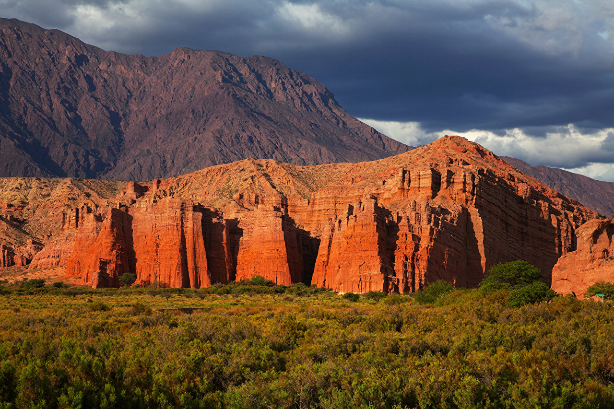
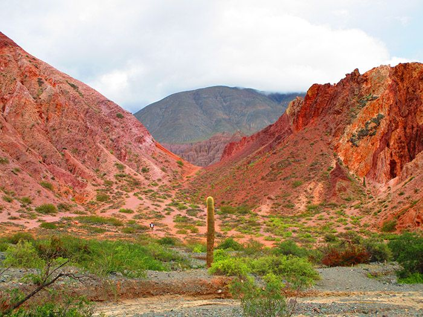
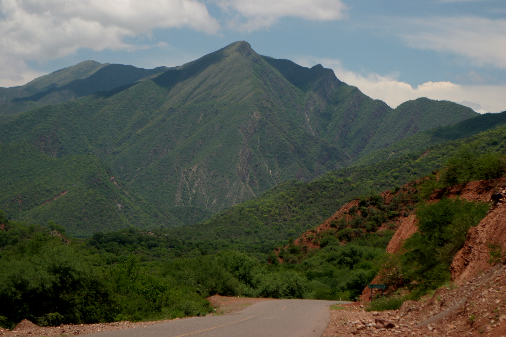

El Llullaillaco es un estratovolcán cuya altura es de 6739 msnm ubicado en la Cordillera de los Andes, dentro del Altiplano, en la frontera entre la Provincia de Salta (Argentina) y la Región de Antofagasta (Chile). Es considerado el segundo volcán activo más alto del mundo, luego del Nevado Ojos del Salado, y su última erupción ocurrió en 1877.
El Nevado de Cachi, también conocido como Sierra de Cachi, es la montaña más alta de la región de los valles Calchaquíes y la 19° de Argentina. Con una altitud que llega a los 6356 msnm, está conformado por nueve cumbres, llamándose Cumbre del Libertador General San Martín a la mayor. Se encuentra íntegramente dentro de la provincia de Salta a pocos kilómetros al oeste de la localidad de Cachi y por lo tanto de la Ruta 40.
El Cerro Palermo o Nevado de Palermo es una cumbre montañosa de la provincia de Salta, en el noroeste de la República Argentina. Tiene una altitud de 6172 m. Forma parte de la Sierra de Cachi, que marca el límite entre la Puna y los Valles Calchaquíes, y que está formada también por otras cumbres, casi todas ellas al sudoeste del Palermo, entre ellas el Nevado de Cachi (6380 m), el Cerro Ciénaga Grande (6030 m), el Cerro Bayo (5253 m), el Cerro Incauca (4900 m) y el Cerro Gordo (4820 m).
El Aracar es un estratovolcán ubicado en Argentina, cerca del límite con Chile. Presenta un cráter juvenil de 1,5 km de diámetro, el cual contiene una pequeña laguna. El cono volcánico se generó en tres ciclos eruptivos antes del Plioceno. El estratovolcán andesítico subyace sobre domos de lava dacítica. Se ven flujos de lava conservados en su base, por debajo de los 4500 msnm.
El volcán Socompa es un estratovolcán de Suramérica ubicado entre el límite de la Región de Antofagasta, Chile y la Provincia de Salta, Argentina. Este estratovolcán tiene una altitud de 6031 m y es una de las cumbres salteñas más altas.
Ciénaga Grande es una montaña de la cordillera de los Andes, localizado en el departamento La Poma en la provincia argentina de Salta, con una altitud de 6.030 metros sobre el nivel del mar.
Salín es un estratovolcán de la cordillera de los Andes ubicado en el límite entre Argentina (provincia de Salta) y Chile (región de Antofagasta). Tiene una altura de 6029 metros. De su ladera oeste brota la quebrada de Salin.
El Cerro Acay, o más conocido como Nevado de Acay, es un accidente geográfico perteneciente a la Cordillera de los Andes, ubicado en la provincia de Salta en el límite de los departamentos de Rosario de Lerma y La Poma. Con una altura de 5750 msnm (o 18 864 pies) en las coordenadas geográficas: 24°25′01.7″S 66°09′38.7″O el macizo se compone de una cumbre principal (Acay grande) y, como prolongación en dirección sudeste, de un par de cumbres menores de 5350 msnm denominado Acay Chico.
El Lastarria, también conocido como Azufre, es un estratovolcán enclavado en el límite entre Argentina y Chile. Recibe su nombre en honor a José Victorino Lastarria (1817-1888), célebre intelectual y político chileno que describió las riquezas del desierto de Atacama, y que se refiere en sus obras al volcán "Azufre", siguiendo las observaciones de Rodulfo Amando Philippi.
l cerro Chuscha, también conocido como Nevado de Chuscha, se encuentra ubicado en el departamento Cafayate, provincia de Salta, Argentina. Pertenece al sistema orográfico de la cordillera Oriental Andina, formando parte del extremo septentrional de la serranía del Cajón, que se extiende de Norte a Sur al oeste del valle del río Santa María. El nombre de chuscha proviene del quechua «Pelo». Su altitud es de 5412 msnm, tratándose de un nevado formado por una cumbre principal, de la cual se desprende un filo occidental y uno oriental, los que presentan a su vez, cumbres secundarias de menor altitud. Ala punta del cerro se encuentra la antigua ciudad de Chujchagasta, hoy llamada Tolombón, antiguo asentamiento de la etnia calchaquí y subparcialidad de los tolombones.